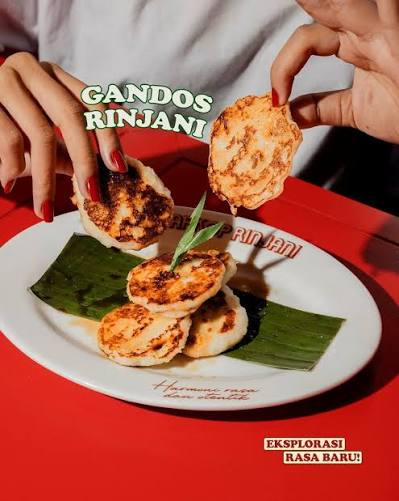
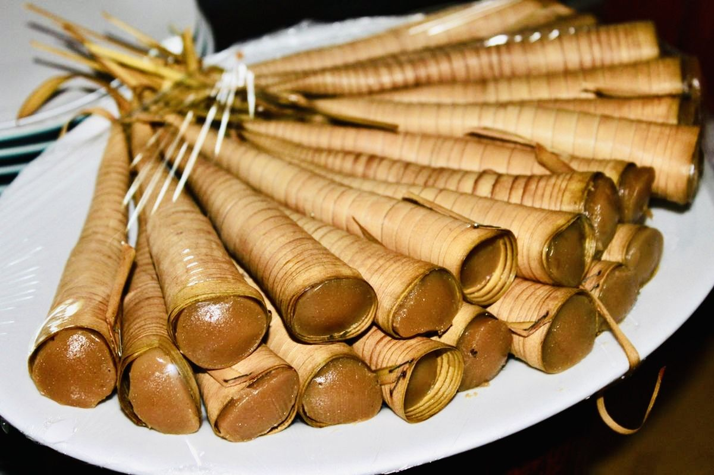
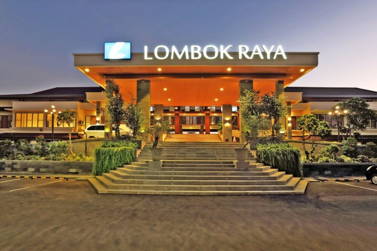
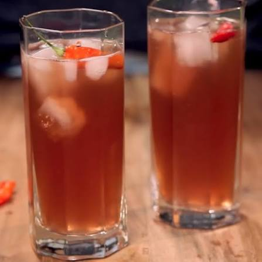
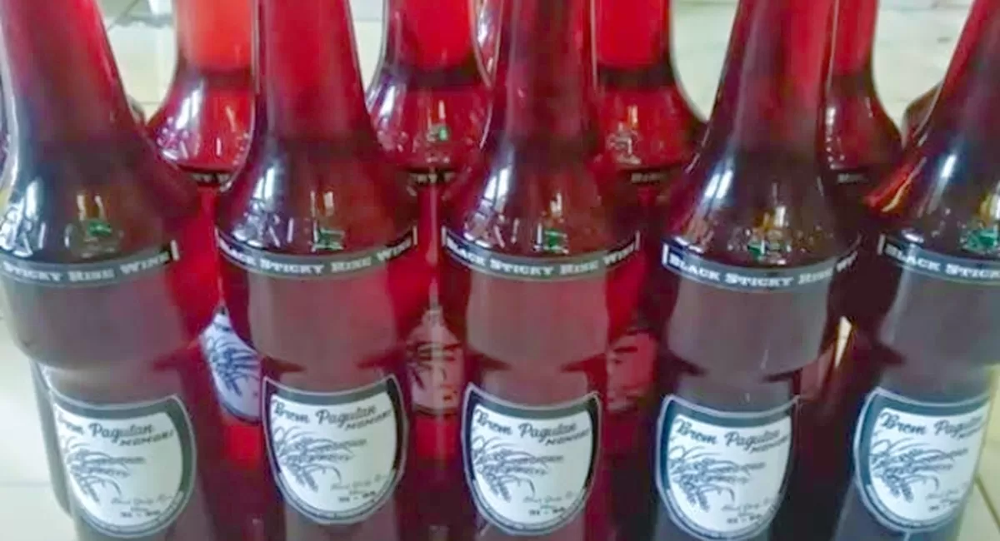
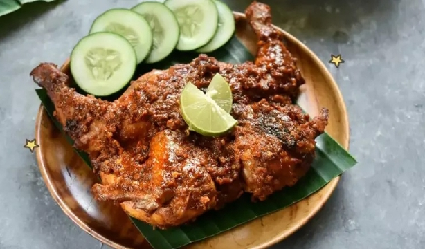
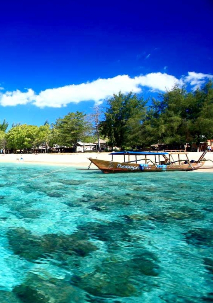
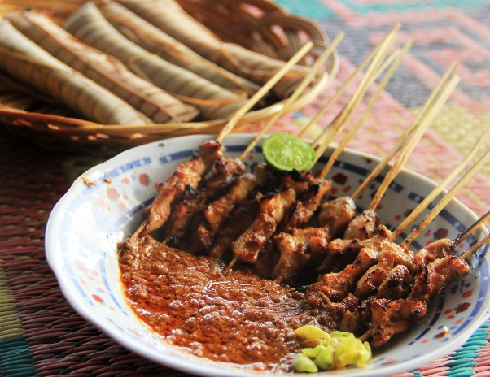

selamat datang di explore lombok
temukan berbagai kuliner, penginapan, dan tempat wisata menarik di lombok.

kuliner lombok
temukan berbagai kuliner khas dari lombok

jajanan lombok
temukan berbagai jajanan khas dari lombok

Tempat Wisata rinjani
temukan berbagai tempat wisata menarik di lombok

Penginapan lombok
temukan berbagai penginapan nyaman di lombok

Minuman lombok
temukan berbagai minuman khas dari lombok

Es segar lombok
temukan berbagai es khas dari lombok

Ayam Taliwang
Hidangan ayam bakar/goreng khas Lombok dengan lumuran bumbu rempah merah yang pekat, bercita rasa pedas gurih, biasanya disajikan dengan irisan mentimun segar dan jeruk limau.
Pantai Senggigi
Kawasan pantai ikonik di Lombok yang menjadi salah satu spot terbaik untuk menikmati matahari terbenam (sunset) dengan siluet perahu nelayan di laut yang tenang.

Gili Trawangan
Pulau kecil di barat laut Lombok yang terkenal dengan pasir putihnya yang lembut, air laut jernih berwarna kebiruan, serta perahu tradisional yang bersandar di tepi pantai.

Sate Bulayak
Sate khas Suku Sasak yang terbuat dari daging sapi, ayam, atau jeroan. Keunikan sate ini terletak pada bumbu kacangnya yang dicampur santan kental dengan rempah rahasia bercita rasa gurih pedas, serta disajikan bersama bulayak (lontong yang dibungkus melingkar dengan daun aren).
kuliner lombok
lombok memiliki berbagai makanan dan jajanan khas yang menarik di coba. kuliner lombok memiliki cita rasa yang khas dan menjadi bagian dari budaya masyarakat.

sasak lombok
salah satu makanan khas lombok yang terkenal dengan kaldu khas nya.
makanan khas
berbagai makanan tradisional yang terkenal di berbagai tempat di lombok.
Minuman lombok
temukan berbagai minuman khas dari lombok
Sate Bulayak
Sate khas Suku Sasak yang terbuat dari daging sapi, ayam, atau jeroan. Keunikan sate ini terletak pada bumbu kacangnya yang dicampur santan kental dengan rempah rahasia bercita rasa gurih pedas, serta disajikan bersama bulayak (lontong yang dibungkus melingkar dengan daun aren).
tempat wisata
lombok memiliki tempat wisata yang menarik dan seru untuk di kunjungi. lombok memiliki banyak tempat wisata yang bisa di kunjungi.

gunung rinjani
masih ada banyak tempat wisata di lombok salah satunya adalah gunung rinjani. yang terkenal dengan pemandangannya yang indah.
Gili Trawangan
Pulau kecil di barat laut Lombok yang terkenal dengan pasir putihnya yang lembut, air laut jernih berwarna kebiruan, serta perahu tradisional yang bersandar di tepi pantai.
Pantai Senggigi
Kawasan pantai ikonik di Lombok yang menjadi salah satu spot terbaik untuk menikmati matahari terbenam (sunset) dengan siluet perahu nelayan di laut yang tenang.